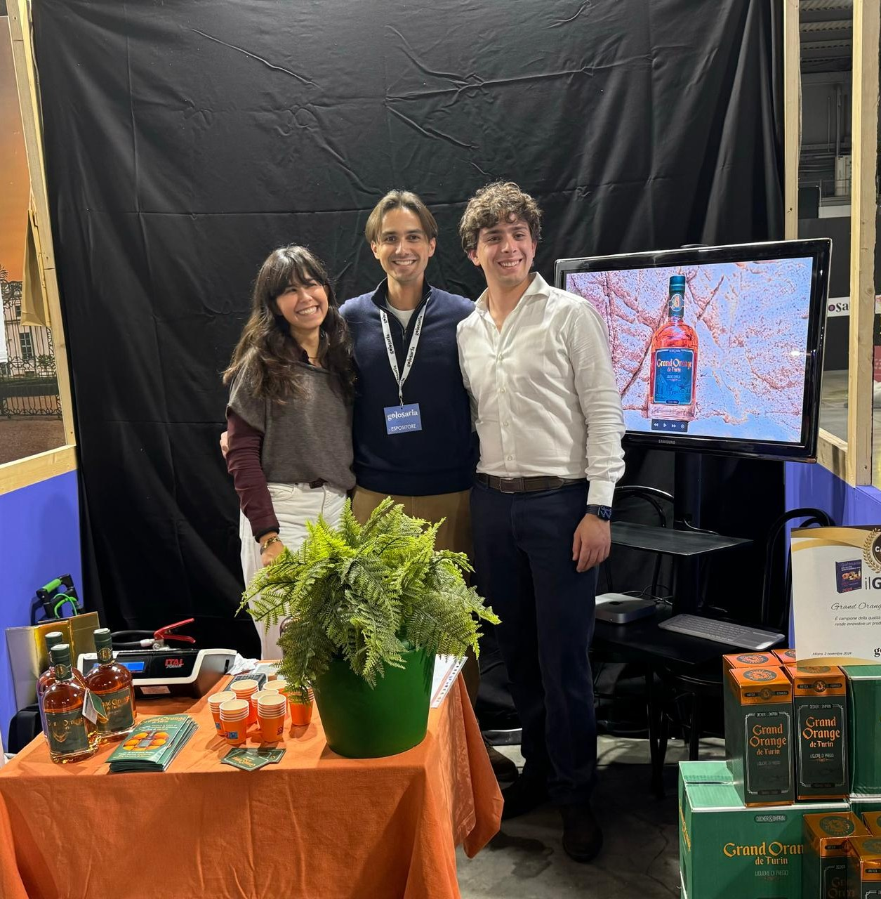
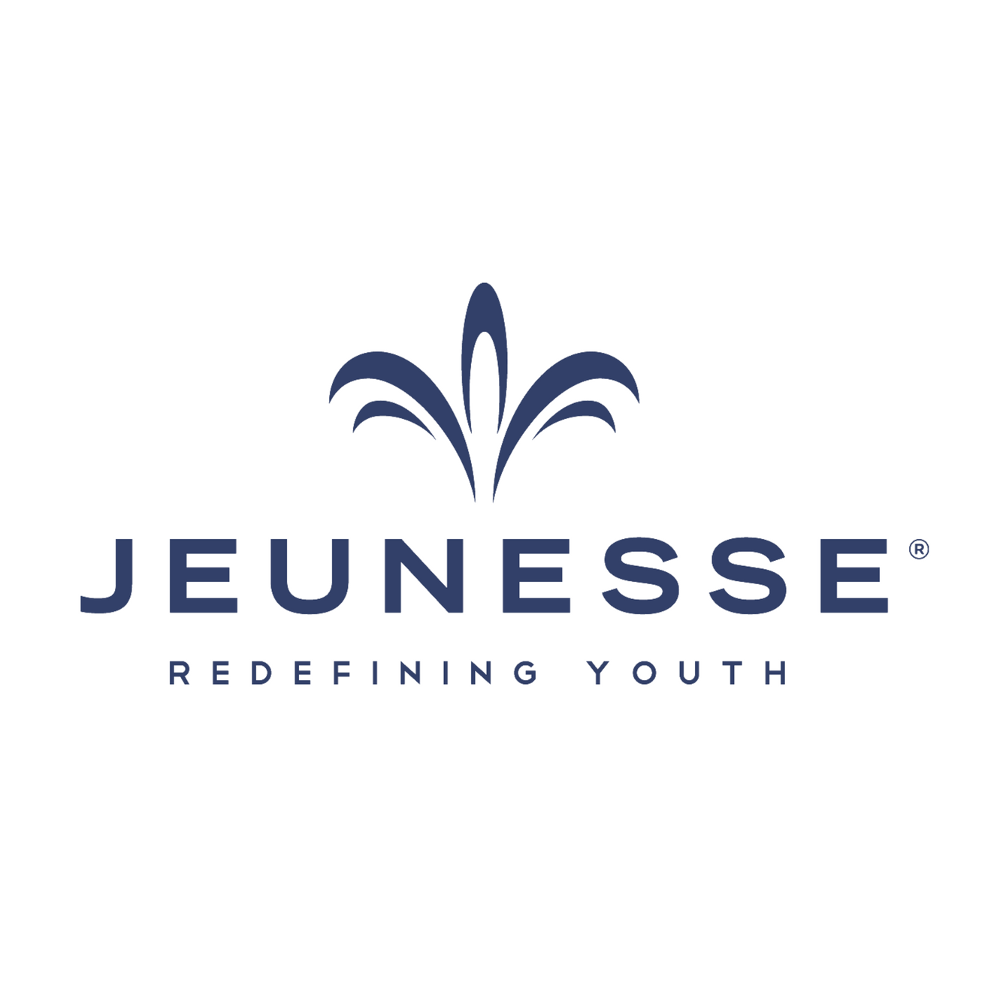

01. Experience

Professional Path

Jan 2024 — Ongoing
Partner @ Grand Orange de Turin
Driving strategic decision-making and overseeing IT operations and digital infrastructure for the firm.
View Strategic Role →Freelance Developer
2017 — 2021Designing and developing responsive websites and digital art.

Network Marketer
2017 — 2021Leveraging digital marketing strategies for network expansion and performance optimization.